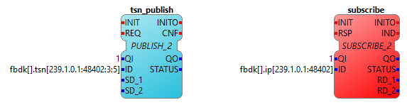

How to use 4DIAC's Time Sensitive Networking Communication Interface
Introduction
This tutorial shows how to use 4diac's Time Sensitive Networking (TSN) features.
Some standards of TSN are still in the active standardization phase (status July
2018) e.g., IEEE802.1ASRev and IEEE802.1Qch.
The advantages of TSN are:
- Convergent network: network traffic with a vast variety of network requirements
are transmitted on a single network cable, hence TSN improves bandwidth utilization and
reduces cabling effort.
- Interoperability: TSN is an IEEE standard extension for the already existing and broadly
used Ethernet.
- Determinism: A correctly configured TSN network guarantees the transmission of
packets to the appropriate receivers.
- Real-Time: On top of determinism TSN networks guarantee the transmission of network packets
within a certain time i.e., a maximum latency.
4diac's communication layer implements publish-subscribe connections via Service
Interface Function Blocks (SIFB). The publish FBs extended by a VLAN ID and the
message priority, represented in the ID data input parameter.
Limitations
The current implementation was tested on Beaglebone Blacks on debian with real-time patch
(4.1.27-bone-rt-r22) and Ubuntu 16.04LTS.
Current limitations
- TSN layer is supported on Linux
- Only supports vlan interfaces with eth0 as its physical network interface (e.g., eth0.1,
eth0.2, .. , eth0.165, ..)
How to Build FORTE with TSN Features
- Checkout the develop branch of forte
$ git clone git://git.eclipse.org/gitroot/4diac/org.eclipse.4diac.forte.git
$ cd org.eclipse.4diac.forte
$ git checkout develop
- Create a directory for the binary files and set the appropriate CMake variables
$ mkdir -p bin/posix
$ cd bin/posix/
$ cmake ../.. -DCMAKE_BUILD_TYPE=Debug -DFORTE_ARCHITECTURE=Posix -DFORTE_COM_TSN=ON
- Build forte with:
$ make
- Run forte with:
$ cd src
$ ./forte
Configure 4diac's TSN Layer Using a Publish Function Block
The new 4diac TSN enabled IP communication layer maps a UDP stream to a specific VLAN interface.
It binds the stream to a virtual Ethernet adapter (e.g., eth0.x). The correct tagging with VLAN ID
and priority is used by the TSN enabled network to transmit packets according to their real-time
requirements. The different VLANs are related to different forwarding and scheduling strategies
of the TSN network.
An example of a TSN enabled PUBLISH FB with a standard IP layer SUBSCRIBER FB is shown in the
following figure.

Note: In order to make this example work you have to route the UDP multicast traffic at the device
of the subscriber like follows:
$ route add -net 239.1.0.0 netmask 255.255.0.0 dev eth0.3
$ ./forte
... and you have to set up the VLAN interface and its IP address on the sending device before
binding a stream to it for example via:
$ sudo ifconfig eth0.3 up
$ sudo ifconfig eth0.3 "your_favorite_IP_address"
$ sudo ifconfig eth0.3 netmask "your_favorite_netmask"
Where to go from here?
Go back to Protocols index:
Communication Index
If you want to go back to the Start Here page, we leave you here a fast access
Start Here page
Or Go to top